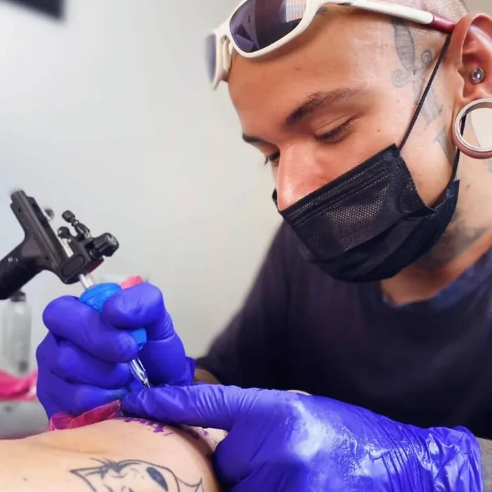

Contato
Chama no WhatsApp com a ideia e o local do corpo.
Willian Souza é artista e tatuador em Cotia, no coração de São Paulo. Ele não "aplica desenhos" — ele constrói peças. Primeiro escuta, depois desenha, e só então trabalha na sua pele.
O resultado é uma tatuagem que ninguém mais tem: desenhada pra você, respeitando a anatomia do seu corpo e o estilo da sua história. Da primeira mensagem até a cicatrização, você é acompanhado de perto.

Chama no WhatsApp com a ideia e o local do corpo.
Uma peça exclusiva desenhada pra você, sem pressa.
Data, horário e valor combinados de forma transparente.
Sessão segura, atenta e com acompanhamento pós.


Chame no WhatsApp com uma foto da referência, a região do corpo e o tamanho aproximado. Você recebe retorno com prazo e valor.
Depende do tamanho, do detalhamento e da área do corpo. O valor é fechado com você antes de qualquer agendamento — sem surpresa.
Pode levar referências. Mas a tatuagem final é sempre desenhada do zero, na medida certa pro seu corpo — este é o nosso selo.
Cada região tem uma sensibilidade diferente. A gente conversa sobre isso antes e você vai preparado — a maioria descreve como um arranh�[...]
Você sai com orientação completa de cicatrização e meu canal aberto pra qualquer dúvida durante as semanas seguintes.